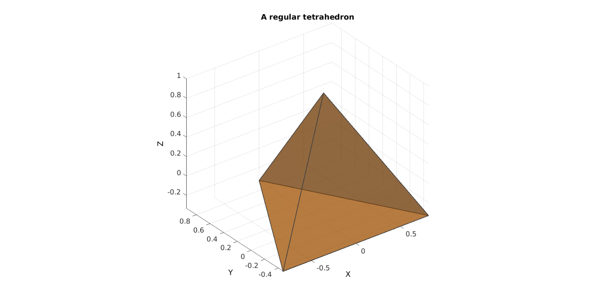
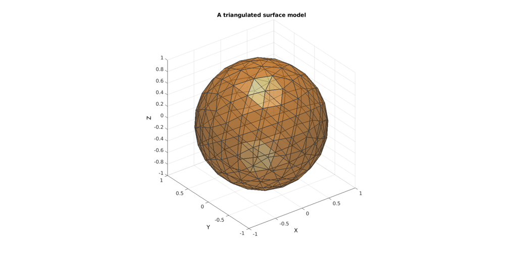
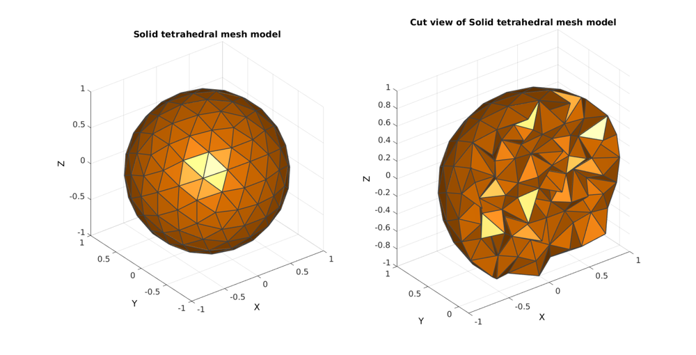

tetVolMeanEst
Below is a demonstration of the features of the tetVolMeanEst function
Contents
clear; close all; clc;
Plot settings
fontSize=15; faceAlpha1=0.5; faceAlpha2=1; edgeColor=0.25*ones(1,3); edgeWidth=1.5; patchColor=[1 0.5 0];
Estimaging tetrahedral volume based on mean edge length and regular face assumption
% Get a regular tentrahedron [V,F]=platonic_solid(1,1); % Calculate true volume VE=tetVol([1 2 3 4],V) %Estimated volume for regular tets based on mean edge lengths [VE_est]=tetVolMeanEst(F,V)
VE =
0.5132
VE_est =
0.5132
Plotting model
hf=cFigure; title('A regular tetrahedron','FontSize',fontSize); xlabel('X','FontSize',fontSize); ylabel('Y','FontSize',fontSize); zlabel('Z','FontSize',fontSize); hold on; hp=patch('Faces',F,'Vertices',V); set(hp,'FaceColor',patchColor,'FaceAlpha',faceAlpha1,'lineWidth',edgeWidth,'edgeColor',edgeColor); camlight headlight; set(gca,'FontSize',fontSize); view(3); axis tight; axis equal; grid on;
The two metrics coincide in this case but for irregular meshes they may divergerge.
Using tetVolMeanEst to set desired mesh volume for tetgen meshing
For tetrahedral meshing schemes surface geometry is usually provided. For instance triangulated surface data. If the desired element volume can be specified then in this case tetVolMeanEst can be used to estimate the desired element volume given the input surface mesh (provided the surface mesh is not remeshed). This is highlighted in the following example.
Building a geodesic dome surface model
[F,V,~]=geoSphere(2,1);
Plotting model
hf=cFigure; title('A triangulated surface model','FontSize',fontSize); xlabel('X','FontSize',fontSize); ylabel('Y','FontSize',fontSize); zlabel('Z','FontSize',fontSize); hold on; hp=patch('Faces',F,'Vertices',V); set(hp,'FaceColor',patchColor,'FaceAlpha',faceAlpha1,'lineWidth',edgeWidth,'edgeColor',edgeColor); camlight headlight; set(gca,'FontSize',fontSize); view(3); axis tight; axis equal; grid on;
The triangles are quite regular and can be used to estimate desired tetrahedral element volume
[regionA]=tetVolMeanEst(F,V); %Volume for regular tets
Defining input structure
inputStruct.stringOpt='-pq1.2AaYQ'; inputStruct.Faces=F; inputStruct.Nodes=V; inputStruct.holePoints=[]; inputStruct.faceBoundaryMarker=ones(size(F,1),1); %Face boundary markers inputStruct.regionPoints=[0 0 0]; %region points inputStruct.regionA=regionA; inputStruct.minRegionMarker=2; %Minimum region marker
Mesh model using tetrahedral elements using tetGen
[meshOutput]=runTetGen(inputStruct); %Run tetGen
%%%%%%%%%%%%%%%%%%%%%%%%%%%%%%%%%%%%%%%%%%%%% --- TETGEN Tetrahedral meshing --- 21-Dec-2017 15:06:50 %%%%%%%%%%%%%%%%%%%%%%%%%%%%%%%%%%%%%%%%%%%%% --- Writing SMESH file --- 21-Dec-2017 15:06:50 ----> Adding node field ----> Adding facet field ----> Adding holes specification ----> Adding region specification --- Done --- 21-Dec-2017 15:06:50 --- Running TetGen to mesh input boundary--- 21-Dec-2017 15:06:50 Opening /mnt/data/MATLAB/GIT/GIBBON/lib_ext/tetGen/tempFiles/temp.smesh. --- Done --- 21-Dec-2017 15:06:50 %%%%%%%%%%%%%%%%%%%%%%%%%%%%%%%%%%%%%%%%%%%%% --- Importing TetGen files --- 21-Dec-2017 15:06:50 --- Done --- 21-Dec-2017 15:06:50
Access model element and patch data
F=meshOutput.faces; V=meshOutput.nodes; C=meshOutput.faceMaterialID; E=meshOutput.elements;
PLOTTING MODEL
%Selecting half of the model to see interior Y=V(:,2); YE=mean(Y(E),2); L=YE>mean(Y); [Fs,Cs]=element2patch(E(L,:),C(L)); hf1=cFigure; subplot(1,2,1); title('Solid tetrahedral mesh model','FontSize',fontSize); xlabel('X','FontSize',fontSize); ylabel('Y','FontSize',fontSize); zlabel('Z','FontSize',fontSize); hold on; hps=patch('Faces',F,'Vertices',V,'FaceColor','flat','CData',C,'lineWidth',edgeWidth,'edgeColor',edgeColor); view(3); axis tight; axis equal; grid on; colormap(autumn); camlight headlight; set(gca,'FontSize',fontSize); subplot(1,2,2); title('Cut view of Solid tetrahedral mesh model','FontSize',fontSize); xlabel('X','FontSize',fontSize); ylabel('Y','FontSize',fontSize); zlabel('Z','FontSize',fontSize); hold on; hps=patch('Faces',Fs,'Vertices',V,'FaceColor','flat','CData',Cs,'lineWidth',edgeWidth,'edgeColor',edgeColor); view(3); axis tight; axis equal; grid on; colormap(autumn); camlight headlight; set(gca,'FontSize',fontSize); drawnow;

GIBBON www.gibboncode.org
Kevin Mattheus Moerman, gibbon.toolbox@gmail.com
GIBBON footer text
License: https://github.com/gibbonCode/GIBBON/blob/master/LICENSE
GIBBON: The Geometry and Image-based Bioengineering add-On. A toolbox for image segmentation, image-based modeling, meshing, and finite element analysis.
Copyright (C) 2017 Kevin Mattheus Moerman
This program is free software: you can redistribute it and/or modify it under the terms of the GNU General Public License as published by the Free Software Foundation, either version 3 of the License, or (at your option) any later version.
This program is distributed in the hope that it will be useful, but WITHOUT ANY WARRANTY; without even the implied warranty of MERCHANTABILITY or FITNESS FOR A PARTICULAR PURPOSE. See the GNU General Public License for more details.
You should have received a copy of the GNU General Public License along with this program. If not, see http://www.gnu.org/licenses/.